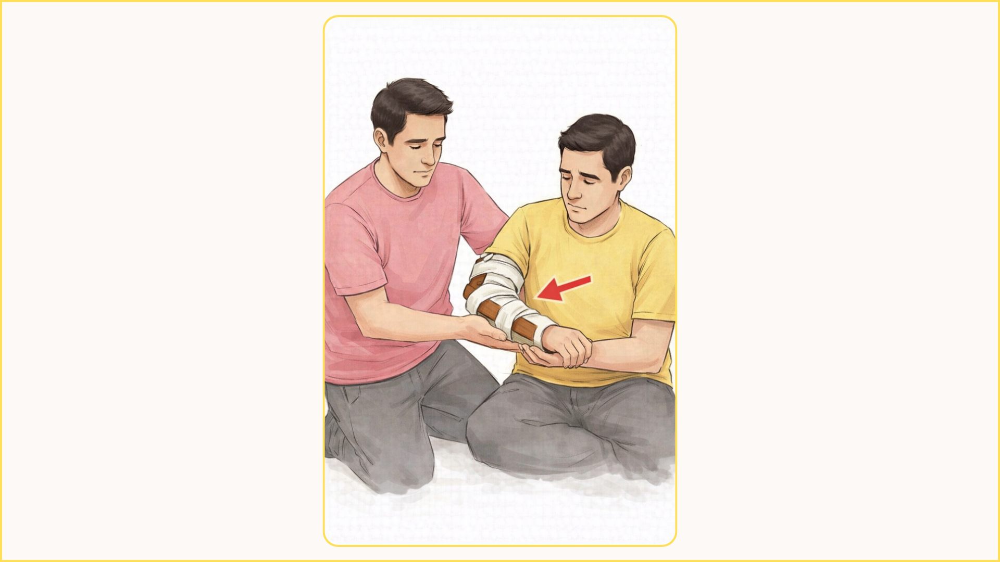
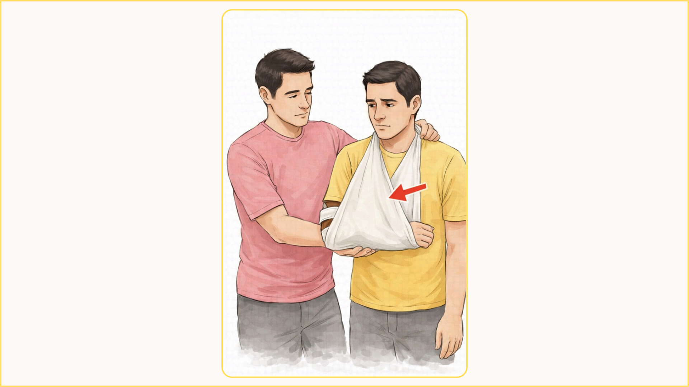

Support the injured arm gently. Do not let it hang or move. Keep the person calm and still to prevent more pain or further injury.
Place a soft cloth or padding around the injured area. This cushions the arm and helps reduce movement before adding support.

Place a firm support, such as a stick or splint, along the injured arm. Secure it gently with bandages to keep the arm from moving and prevent further injury.

Place the injured arm in a sling across the chest. Tie it around the neck to support the arm and keep it still. Seek medical help as soon as possible.